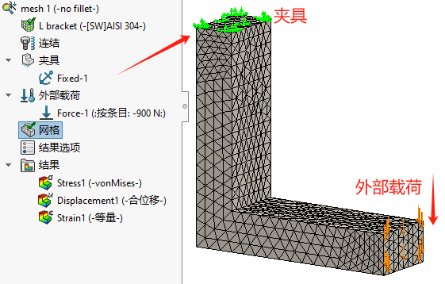
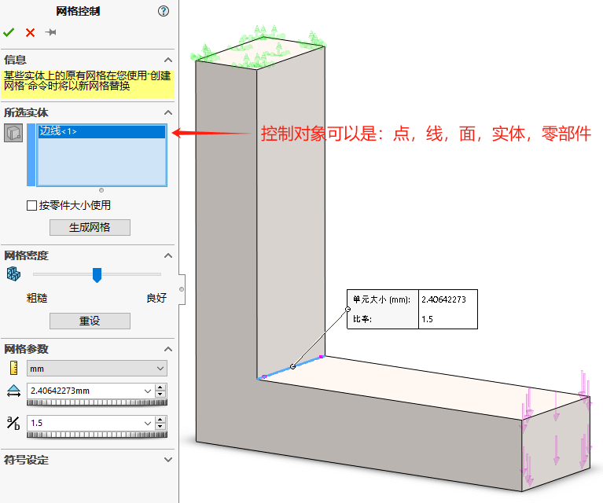
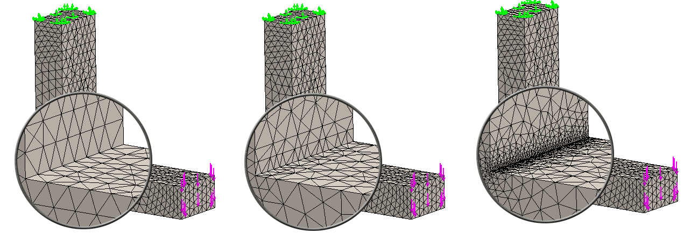
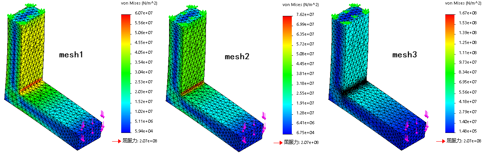
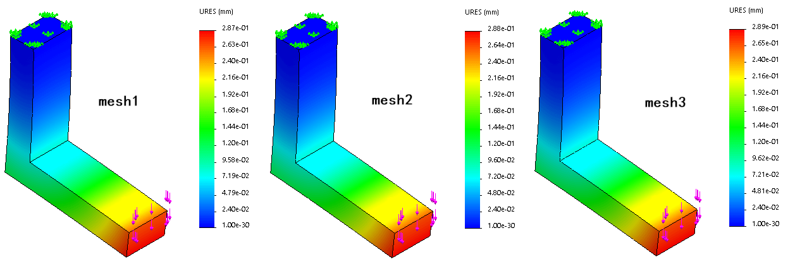
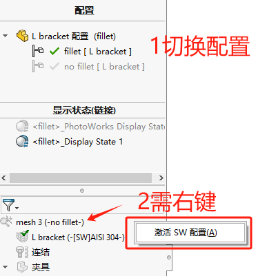
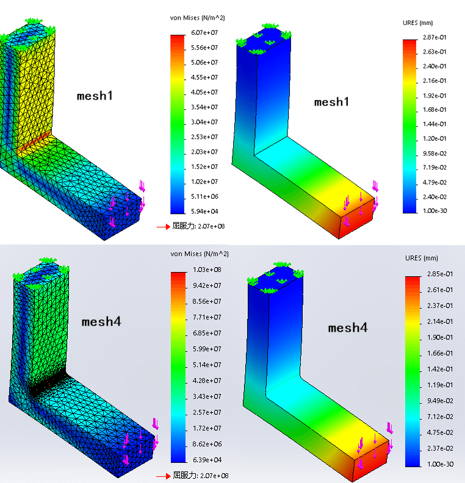
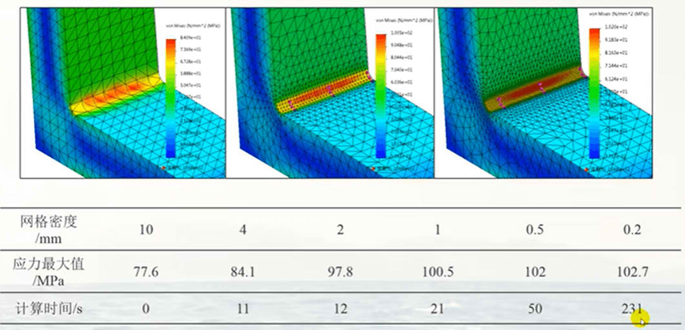
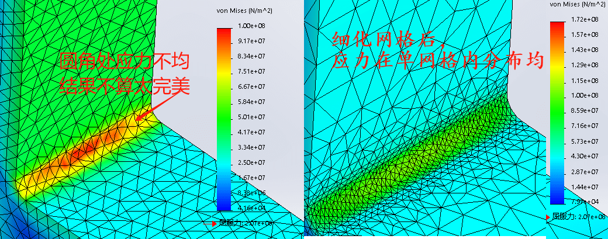
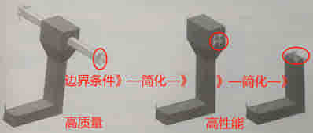

Simulation-结果控制
分析实例:L型支架
问题描述:L形支架上端面固定，同时在下端面施加900N弯曲载荷，分别使用10mm、3mm和1mm网格求解模型，对比应力结果。材料:AISI304
通过L形支架实例，验证“不带圆角”、“网格控制”、“圆角特征”、“夹具类型”对仿真结果的影响。下图是算例的基本设置（随后的5算例都按这个标准进行）。
graph LR 设置算例-->不带圆角-->统一网格大小1-->算例1: 不带圆角-->网格控制:细化圆角-->算例2\3:应力随细化增大 设置算例-->带圆角-->统一网格大小2-->算例4: 带圆角-->夹具由面改边+网格细化-->算例5:
不带圆角分析
2.3.4 结果比较
网格对比
应力对比
位移对比
| 算例 | 最大位移/mm | 位移增加/mm(%) | 最大von Miss应力/Mpa | von Miss应力增加/Mpa(%) |
|---|---|---|---|---|
| mesh1 | 0.287 | - | 60.7 | - |
| mesh2 | 0.288 | 0.001 | 76.2 | 15.5 |
| mesh3 | 0.289 | 0.001 | 167 | 90.8 |
应力奇异性
网格精细化后，位移变化不大，应力越来越大。位移会收敛于一个有限制，应力值是发散的。
根据弹性理论，在尖角处的应力是无穷大的。由于离散化误差，有限元的模型并不会产生无穷大的应力结果，这一离散化误差掩盖了建模时的错误（无圆角的错误）。因此，如果想了解圆角附近的应力情况，那么不管圆角尺寸多么小，都应该在模型中将其包含进来。
带圆角分析
分析实例:L型支架
问题描述:L形支架上端面固定，同时在下端面施加900N弯曲载荷，分别使用10mm、2mm和0.5mm网格求解模型，对比应力分布和位移分布情况。
於料:AISI304
在同文件下的仿真设计树内容中，如果切换了文件配置（模型出现变化），则仿真树里的内容也会发生变化，变成灰色的内容。此时需要右键算例-【激活SW配置】来激活当前配置下的算例设置。
使用先前mesh1的算例复制处mesh4，并运行结果如下：
从mesh4中的应力显示分布看，模型特征对称但圆角处的应力分布不均。对于结果来说是不准确的，这是圆角区域网格细分的精细程度有关。
网格无关性
应力结果的网格无关性检查。当网格细化到一定程度后，网格的细化对应力结果的影响趋于稳定。此时的网格大小就是适合于仿真结果的准确性。
从经验判读看：从mesh4复制出mesh5，并在算例5中，网格控制细化圆角面的网格大小，可以看到仿真云图颜色对网格的覆盖超过2-3格时，仿真结果趋于稳定和准确。
边界条件
为了将模型固定在空间中的某个位置并求解该数学问题，就必须使用边界条件。在分析时，零部件的边界条件可以有多种，需从分析结果的准确性和性能考虑。
总结
本章说明了模型的错误如何导致有限元解的错误。使用局部网格控制(而非第1章中的整体网格控制)，获得了不同网格划分下的解，并揭示了在尖角处的应力奇异性。
2.8 提问
Q1如果压缩圆角等特征会影响结果，那为什么分析中常常还要去除圆角和小圆角面？
Q2位移会由于压缩圆角而受影响吗？如同应力一样？为什么？